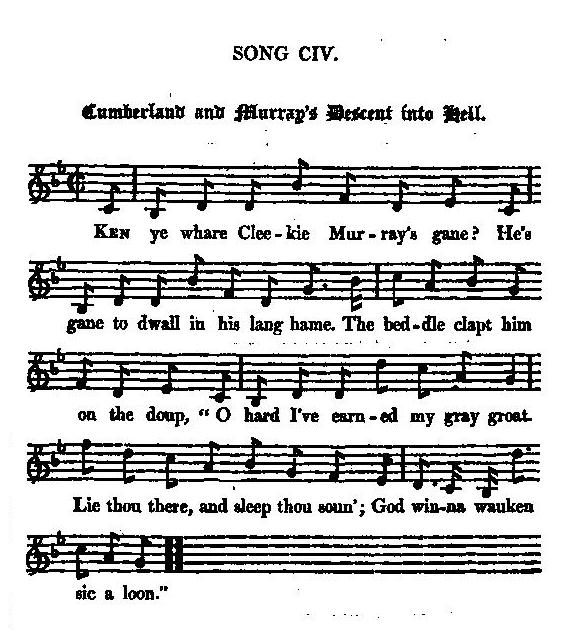

Cumberland and Murray's Descent into Hell
La descente aux enfers de Cumberland et de Murray
-from "Remains of Nithsdale and Galloway Song", page 165, 1810 and-from Hogg's "Jacobite Relics" 2nd Series N°104 page 199, 1821
Tune - Mélodie
"Ceann an fhèid" from Captain Fraser's Collection N° 124
Sequenced by Christian Souchon

|
To the tune:
See "Ceann an fhèid" from Captain Fraser's Collection N° 124 For a list of other "Whigs in hell" songs, click here. |
A propos de la mélodie:
Cf. "Ceann an fhèid" du Recueil du Capitaine Fraser , N° 124 Autres chants de "Whigs en enfer" : cliquer ici. |

|
CUMBERLAND AND MURRAY'S
DESCENT INTO HELL 1. Ken ye whare Cleekie Murray's gane? He's gane to dwall in his lang hame. The beddle clapt him on the doup, " O hard I've earned my gray groat. Lie thou there, and sleep thou soun'; God win-na wauken sic a loon." 2. Whare's his gowd, and whare's his gain, He rakit out 'neath Satan's wame ? He hasna what'll pay his shot, Nor caulk the keel o' Charon's boat. Be there gowd whare he's to beek, He'll rake it out o' brunstane smeek. 3. He's in a' Satan's frything-pans, Scouth'ring the blude frae aff his han's; He's washing them in brunstane lowe; His kintra's blude it winna thow: The hettest soap-suds o' perdition Canna out thae stains be washing. 4. Ae devil roar'd, till hearse and roopit, " He's pyking the gowd frae Satan's pu'pit!" Anither roar'd, wi' eldritch yell, " He's howking the keystane out o' hell, " To damn us mair wi' God's day-light!" And he doukit i' the caudrons out o' sight. 5. He stole auld Satan's brunstane leister, Till his waukit loofs were in a blister; He stole his Whig spunks, tipt wi' brunstane, And stole his scalping-whittle's whunstane ; And out o' its red-hot kist he stole The very charter-rights o' hell. 6. Satan, tent weel the pilfering villain; He'll scrimp your revenue by stealing. Th' infernal boots in which you stand in, With which your worship tramps the damn'd in, He'll wile them aff your cloven cloots, And wade through hell fire in your boots. 7. Auld Satan cleekit him by the spaul, And stappit him i' the dub o' hell. The foulest fiend there doughtna bide him The damn'd they wudna fry beside him, Till the bluidy duke came trysting hither, And the ae fat batcher tried the tither. 8. Ae deevil sat splitting brunstane matches; Ane roasting the Whigs like bakers' batches; Ane wi' fat a Whig was basting, Spent wi' frequent prayer and fasting. A' ceas'd when thae twin butchers roar'd, And hell's grim hangman stopt and glowr'd. 9. " Fy, gar bake a pie in haste, " Knead it of infernal paste," Quo' Satan; and in his mitten'd hand He hynt up bluidy Cumberland, And whittled him down like bow-kail castock, And in his hettest furnace roasted. 10. Now hell's black tableclaith was spread, Th' infernal grace was reverend said; Yap stood the hungry fiends a' owre it, Their grim jaws gaping to devour it, When Satan cried out, fit to scunner, " Owre rank a judgment's sic a dinner!" 11. Hell's black bitch mastiff lapt the broo, And slipt her collar and gat gae, And, maddening wi' perdition's porridge, Gamph'd to and fro for wholesome forage. Unguarded was the hallan gate, And Whigs pour'd in like Nith in spate. 12. The worm of hell, which never dies, In winded coil writhes up and fries. Whilst the porter bitch the broo did lap, Her blind whalps bursted at the pap. Even hell's grim sultan, red wud glowrin', Dreaded that Whigs would usurp o'er him. Source: "The Jacobite Relics of Scotland, being the Songs, Airs and Legends of the Adherents to the House of Stuart" collected by James Hogg, 2nd volume published in Edinburgh by William Blackwood in 1821. |
CUMBERLAND AND MURRAY'S DESCENT
INTO HELL (English transcription) 1. D' you know where Greedy Murray's gone? He's gone to dwell in his long home. The gravedigger clapped him on the bottom, " O hard I've earned my grey coin. Lie thou there, and sleep thou sound; God won't wake such a loon." 2. Where's his gold, and where's his gain, He raked out beneath Satan's womb ? Has no money to pay his shot, Or chalk the keel of Charon's boat. (May not be ferried on easy terms) If there's gold where he's got to lodge, He'll rake it out of brimstone (sulphur) smoke. 3. He's in old Satan's frying-pan, Wiping the blood off his hands; He's washing them in brimstone flame; His country's blood it won't thaw: The hottest soap-suds of perdition Cannot wash out those stains. 4. A devil roared, till hoarse and voiceless, " He's picking the gold from Satan's pulpit!" Another roared, with fearsome yell, " He is digging the keystone out of hell, " To damn us more with God's day-light!" And he ducked in the cauldrons out of sight. 5. He stole old Satan's brimstone "leister" (fork), Till his horned hands were in a blister; He stole his Whig matches, tipped with brimstone, And stole his scalping-knife's grinding stone; And out of its red-hot chest he stole The very charter-rights of hell. 6. Satan, beware well of the pilfering villain; He'll shrink your revenue by stealing. The infernal boots you stand in, With which Your Worship tramps the damned in, He'll wile them off your cloven hooves, And wade through hell fire in your boots. 7. Old Satan snatched him by the shoulder, And stopped him in the mud of hell. The foulest fiend there could not abide him The damned they would not fry beside him (mix with him), Till the bloody Duke came, appointed hither, And the one fat butcher tried the other. 8. A devil sat splitting brimstone matches; One roasting the Whigs like baker's batches; One with fat a Whig was basting, Spent with frequent prayer and fasting. All ceased when the twin butchers roared, And hell's grim hangman stopped and glared. 9. "Now, let us bake a pie in haste, " Knead it of infernal paste," Quoth Satan; and in his mittened hand He lifted up bloody Cumberland, And chopped him down like cabbage stalk, And in his hottest furnace roasted. 10. Now hell's black tablecloth was spread, Th' infernal grace was reverend said; Craving stood the hungry fiends all over it, Their grim jaws gaping to devour it, When Satan cried out, fit to nauseate, " Over rank of judgment is such a dinner!" 11. Hell's black bitch mastiff lapped the brew, And slipped her collar and got free, And, maddening with perdition's porridge, Bustled to and fro for wholesome forage. Unguarded was the hellish gate, And Whigs poured in like Nith in spate. 12. The worm (dragon) of hell, which never dies, In wound coil writhes up and fries. Whilst the porter bitch the brew did lap, Her blind whelps burst at the pap. Even hell's grim sultan, red wild glaring, Dreaded that Whigs would usurp over him. Remark: The last two verses are left out in Cromek's version |
DESCENTE AUX ENFERS DE CUMBERLAND ET MURRAY
1. Savez-vous qu'il est sous terre, Murray, le roi des pendards? Le croque-mort vient de faire Son office pour un liard. "Allez, dors bien, Dieu le Père, N'a cure d'un tel gaillard!" 2. Où sont donc l'or, les prébendes Tirés du cul de Satan? Ne mettra-t-on sur son compte Son obole pour Caron? L'or que recèle ce soufre, Il en fera l'extraction!" 3. Assis dans la poêle à frire Il voit le sang sur ses mains Qu'il plonge en vain dans les flammes: Le sang écossais tient bien! L'eau bouillante pour les âmes Sur ces taches n'agit point! 4. "Il gratte l'or de ton trône, Satan!" hurle un diable, hagard. Un autre crie, presque aphone: "La clé de voute qui part! On voit le Ciel! Dieu me damne!" Puis plonge dans la bouilloire. 5. Au Diable il vole sa trique, Des ampoules plein les doigts, Ainsi que sa broche à Whigues Et sa meule à coutelas; Puis il dérobe la charte Qui donne aux damnés des droits. 6. "Satan, prends bien garde, il rogne, Ce voleur, sur tes deniers. Tes pieds fourchus pleins de corne, Pour piétiner les damnés, Portent des bottes qu'il lorgne, Pour marcher dans le brasier. 7. Satan le prend par l'épaule Pour qu'il n'aille pas plus loin. C'est un vrai danger, ce drôle, Même pour ses diablotins. Mais le "Duc sanglant" déboule: Boucher: un boucher te tient! 8. Un diable fendait des bûches, Un autre enfourne des Whigs Qu'un troisième enduit de graisse, Fruit de leur jeûne ascétique: Quand les bouchers vocifèrent, Tous se taisent: c'est magique. 9. "Depuis si longtemps je rêve, D'en faire un pâté d'enfer" Dit Satan, et il soulève Cumberland le sanguinaire; Comme un trognon le découpe; Dans la fournaise il l'insère. 10. On a mis la nappe noire, Dit le bénédicité De l'enfer, puis les mâchoires S'ouvrent pour le dévorer. Quand Satan, tout près de rendre, Crie "L'exécrable dîner!" 11. La chienne noire infernale Lèche la sauce et s'enfuit. Ce brouet l'a rendue folle. Un met plus sain est requis. L'enfer est ouvert: les Whigues Tels la Nith en crue s'y ruent! 12. Python l'immortel reptile A cessé ses reptations. Tandis que Cerbère file Ses chiots lapent le bouillon. Satan se fait de la bile: Whigs veut dire "usurpation"! (Trad. Christian Souchon (c) 2010) |
|
In a note to this wonderful song, Hogg writes:
"Of all the songs that ever were written since the world began, this is the first ; it is both so horrible and so irresistibly ludicrous. It is copied from Cromek, but the editor makes no mention how or where he came by it [Nithsdale? Cf. verse 11]. The two last verses he refused to publish, but I thought it a pity that any part of such a morsel should be lost. This secretary, Murray, was a Mr Murray of Broughton, in Tweeddale ; and on being taken and carried to London, he betrayed some secrets, that caused great trouble to several families, who would, otherwise, have escaped ; and from an idea that he did this for a reward, all this obloquy was attached to him by the friends of the prince ; indeed, they had formerly entertained suspicions of his integrity. The following excellent poem of that day was kindly transmitted to me by Mr George Moir, Gallowgate, Aberdeen, With regard to Murray's great and illustrious associate in the infernal regions ( Cumberland ), among a thousand other anathemas that have been presented to me, take the few that follow as specimens: I. Minute of the incorporation of fleshers of Edinburgh, admitting the duke of Cumberland a freeman member of the incorporation. Convening House, April 10, 1746 " Which day the whole members being convened by order of the deacon, and they taking into their serious consideration the high qualities, and most eminent and unparalleled services His Royal Highness, Prince William, Duke of Cumberland, &c. &c. &c. has already done for the welfare and prosperity of this kingdom, and of this city in particular, in subjecting the enemies of our religion, laws, and liberties, who had taken up arms against the nation, in favour of a popish pretender to the crown of this realm, thereby preserving our present happy constitution from popery, slavery, arbitrary, despotic, and tyrannical power, to the great danger of his royal person, which must fire the heart of every true Britton with gratitude, loyalty, and zeal; - and that it became them to show the same on such an occasion so far as was in their power; - and a motion being made to present His Royal Highness with the freedom of the incorporation. The incorporation accordingly did, and hereby do elect and choose HRH, Prince William, Duke of Cumberland, &c. &c. &c. to be a freeman member of this incorporation, and declared, and hereby declare him a freeman thereof, and entitled to all the immunities, privileges, and righteous pertinent thereof, in such manner and form as any other brother or member of the incorporation ever did, or presently does enjoy the same, any law or practice of the incorporation notwithstanding." II. Epitaph on William, Duke of Cumberland. 1. When William shall depart this life, And from this world be hurled, Sure to express into what place, Would puzzle all the world. In heavenly mansions there's no rest For one of such contagion; Nothing unclean can enter in Within that blessed region. 2. Where shall we find a place that's fit In hell he cannot enter; The devil no equal will admit; Then chain him to the centre, Until that great and dreadful day, When fervent heat will purge him ; When heaven and earth shall pass away, May all the furies scourge him ! III. An Inscription. " Here continueth to stink The memory of the duke of Cumberland; Who, with unparalleled barbarity, And inflexible hardness of heart, In spite of all motives to lenity, That policy or humanity could suggest, Endeavoured to ruin Scotland By all the ways a tyrant could invent, Nor was he more infamous For the monstrous inhumanity of his nature, Than fortunate in accumulating Titles and wealth; For, Without merit, Without experience, Without military skill, He was created a field-marshal, and Had the profits of two regiments, And a settled revenue of £40,000 a year! He was the only man of his time Who acquired the name of a hero By the actions of a butchering provost; For, having with 10,000 regular troops, Defeated half that number of famished and fatigued militia, He murdered the wounded, Hanged or starved the prisoners, Ravaged the country with fire and sword, And, Having rioted in continued cruelty, Posted off at length in triumph, With the supposed head Of a brave unfortunate prince ! O, loyal reader, Let not this success tempt thee to despair; Heaven, that punisheth us for our sins, Never overlooks such crimes as these. Having, at last, filled up the measure of his iniquity, He floundered in the mud of contempt; His glory vanished like the morning dew ; And They who once adored him as a hero and a god, Did at last curse him As a madman and a devil!" G.S. MCQuoid in a note to this song in his "Jacobite Songs and Ballads" (1888) remarks: "So much had the Duke and his minions exceeded the powers vested in them by Government, that it was afterwards found necessary to get Parliament to pass a bill of indemnity to screen him from all future consequences of his violations of the law. When even Lord President Forbes, who was the main prop of the civil government at hat period, mildly complained of some outrages against what he called the laws of the land! - "The laws of the Land, My LOrd!" exclaimed the Duke, contemptuously. "By God, I'll make a brigade give laws to the land." |
Dans une note annexée à ce merveilleux chant, Hogg écrit:
"De tous les chants qui ont jamais été écrits, celui-ci occupe le premier rang: il est à la fois horrible et d'une irrésistible drôlerie. Il est recopié sur Cromek qui n'indique pas où et comment il se l'est procuré [Nithsdale? Cf. couplet 11]. Il n'a pas, non plus, voulu publier les deux derniers couplets, mais il serait dommage d'amputer pareil chef d'œuvre. Ce secrétaire, Murray était un M. Murray de Broughton, en Tweeddale ; et quand il fut arrêté et envoyé à Londres, il trahit certains secrets qui causèrent de grands désagréments chez de nombreuses familles qui n'auraient sinon jamais été inquiétées. Le bruit courut qu'il l'avait fait contre une récompense ce qui lui valut d'être couvert d'opprobre par les amis du Prince. D'ailleurs il y a longtemps que l'on doutait de son intégrité. L'excellent poème qu'on vient de lire m'a été aimablement transmis par M. George Moir, Gallowgate, à Aberdeen. A propos du grand et illustre associé de Murray dans les régions infernales ( Cumberland ), parmi les milliers d'anathèmes qui m'ont été communiqués, ceux qui suivent peuvent servir de spécimens: I. Procès verbal de session de la Corporation des Bouchers d'Edimbourg - Admission du Duc de Cumberland comme membre d'honneur. Maison des Corporations, 10 avril 1746. "Ce jour, se sont réunis sur convocation du Doyen tous les membres de la Corporation et, - considérant les éminentes qualités de SAR le prince Guillaume, Duc de Cumberland, etc. etc. et les non moins éminents services par lui rendus pour le bien et la prospérité de ce royaume et de cette cité en particulier, lorsqu'il terrassa les ennemis de notre religion, de nos lois et libertés, lesquels avaient pris les armes contre la nation, en faveur d'un prétendant papiste à la couronne de ce royaume, protégeant ce faisant notre bienfaisante constitution, du papisme, de l'asservissement, de l'arbitraire, du despotisme et de la tyrannie, en payant de sa royale personne, avec un héroïsme qui remplit le cœur de tout véritable Britannique de gratitude, de loyauté et de zèle; - considérant qu'il convient d'exprimer ces sentiments en une telle occasion, autant que faire se peut; - et qu'une motion a été présentée pour conférer à SAR la dignité de membre honoraire; la Corporation a décidé et décide, en conséquence, par la présente, d'élire et de choisir SAR, le Prince Guillaume, Duc de Cumberland, etc. etc. comme membre honoraire et a déclaré et déclare par la présente qu'il est un membre honoraire de celle-ci et qu'il bénéficier de tous privilèges et immunités, dans les mêmes formes et conditions que les autres membres, par le passé ou à l'heure présente, nonobstant les autres règles et pratiques de ladite Corporation." II. Epitaphe pour Guillaume Duc de Cumberland. 1. Quand William la vie quittera, Hors du monde précipité, Dire à coup sûr où il ira Nul ne le peut en vérité. Le ciel ne saurait accueillir Un être aussi contagieux. Rien de souillé ne doit venir Souiller les lieux bénis de Dieu. 2. Où trouver l'endroit idéal? En enfer il ne peut entrer: Le diable n'admet de rival. Au centre qu'il reste enchaîné, Jusqu'à ce jour, terrible, austère Où la chaleur le purgera Où disparaîtront ciel et terre. Qu'il soit châtié comme de droit! ! III. Inscription "Ci git dans la puanteur Le Duc de Cumberland de sinistre mémoire Qui, avec une cruauté sans pareille Et une dureté de cœur inflexible, Inaccessible à la clémence Que la prudence et l'humanité recommandaient, Se mit en devoir de ruiner l'Ecosse Par tous les moyens qu'un tyran puisse imaginer. Il ne fut pas plus infâme Par sa monstrueuse inhumanité Qu'il fut favorisé par la fortune Laquelle le combla de titres et de biens. Car, Sans mérite, Ni expérience, Ni génie aucun, Il fut créé maréchal-des-camps et Eut le bénéfice de deux régiments Et d'une rente annuelle fixée à 40.OOO livres. Ce fut le seul homme de son époque A être fêté en héros Pour s'être conduit en boucher; Car, ayant avec 10.000 hommes entraînés, Vaincu une milice harassée et fatiguée inférieure en nombre de moitié, Il acheva les blessés, Pendit ou fit mourir de faim les prisonniers, Ravagea le pays par le fer et le feu; Et, Après s'être livré à des violences inouïes et ininterrompues Finit par vider les lieux en triomphe, Etant, soi-disant, venu à bout D'un brave et infortuné Prince! O, lecteur loyal, Que ce succès ne t'incite pas à la désespérance! Le Ciel qui nous punit de nos péchés Ne ferme jamais les yeux sur de tels crimes. Ayant enfin donné la pleine mesure de son iniquité, Il s'en fut patauger dans la boue du mépris. Sa gloire s'évanouit comme la rosée du matin. Et Ceux qui jadis l'honorèrent à l'égal d'un héros ou d'un dieu, Ne savaient plus que le maudire Comme un fou et comme un démon!" Dans ses "Jacobite Songs and Ballads" (1888), McQuoid remarque, à propos de ce chant: "Le duc et ses amis avaient tellement outrepassé les pouvoirs dont ils étaient investis par les autorités, qu'on estima par la suite nécessaire de faire adopter par le Parlement un décret ad hoc le garantissant contre les conséquences de ses exactions. Lorsque le Lord Président Forbes lui-même, l'indéfectible soutien du pouvoir à l'époque, se plaignit en termes prudents de certaines atrocités perpétrées au mépris de ce qu'il appelait les lois du pays!- "Les lois de ce pays, Monseigneur!" s'exclama le duc dédaigneusement. "Parbleu, je vais charger une brigade de donner des lois à ce pays!" |
|
|
|
|
Sir John MURRAY of Broughton (1715-1777)
was no apparent relation to
Lord George Murray
, the brilliant strategist and Lieutenant General of the Jacobite army. He was also known as
Secretary to Prince Charles
. He studied at the Universities of Edinburgh and Leyden in the Netherlands, then lived in Rome. Late in 1738 he returned to Scotland and married the lovely Margaret Fergusson. John Murray, whose father had taken part in the 1715 Jacobite uprising, had made the acquaintance of Charlie in Italy. On Charlie's landing in July 1745, he was there to greet him and on 25th August 1745 he was given the post of Secretary. That he was an excellent Secretary in the Jacobite administration is not in dispute. Prince Charles stated that Murray was "worth a thousand men to the standard."
On the day of the disaster at Culloden, he was lying in a sick bed 20 miles away. When he heard of the crushing defeat and his Prince being on the run, he first tried to unite the scattered clans, then went to meet ships loaded with cashes of arms, ammunition, and louis-d'ors that had been sent by France in support the Jacobite cause. Then he made his way to Peebleshire to recover and find passage to Holland, but he was captured at his sister's house on 27th June 1746. Interrogation began immediately but was fruitless. The prisoner was sent to the Tower of London on 7th July 1746 where he turned King's evidence against his Jacobite colleagues, which earned him the nickname "Mr Evidence". His testimony played a large part in Lord Lovat's trial and execution. But examination of Murray's evidence shows that he told practically nothing that the Government did not know already. He was pardoned in June of 1748. His later life was unhappy, as all his previous friends shunned him. However, in 1763, the Prince did visit Murray in London. Murray eventually descended into insanity and died on 6th December 1777. Source: Murray of Stanhope.com |
Sir John MURRAY de Broughton (1715-1777)
n'a pas de lien de parenté connu avec
Lord George Murray
, le brillant stratège et lieutenant-général de l'armée Jacobite. On le connait aussi comme le
Secrétaire du Prince Charles
. Il étudia aux universités d'Edimbourg et de Leyde, aux Pays-Bas, puis vécut à Rome. Vers la fin de 1738 et épousa la jolie Margaret Fergusson. John Murray dont le père avait pris part au soulèvement Jacobite de 1715 avait fait la connaissance du Prince Charles en Italie. Aussitôt après son arrivée en juillet 1745 il accourut le saluer et le poste de Secrétaire lui fut attribué le 25 août 1745. Il est hors de doute qu'il fut un excellent secrétaire dans l'administration Jacobite. Le Prince aimait à dire que Murray "valait à lui tout seul mille hommes sous les drapeaux".
Le jour du désastre de Culloden, il était malade et alité à 20 miles de là. Quand il apprit la cinglante défaite et la fuite de son Prince, il tenta tout d'abord de rassembler les clans dispersés, puis d'aller au devant de vaisseaux français chargés de caisses d'armes, de munitions et de louis-d'or, venus de France en renfort de la cause Jacobite. Enfin il se rendit en Peebleshire pour se reposer et tenter de passer en Hollande, jusqu'au jour où il fût capturé chez sa sœur le 27 juin 1746. On commença immédiatement à l'interroger mais sans succès. Le prisonnier fut transféré à la Tour de Londres le 7 juillet 1746 où il se transforma en témoin à charge contre ses collègues Jacobites, ce qui lui valut le surnom de "M. Témoignage". Sa déposition fut un élément décisif dans le procès et l'exécution de Lord Lovat. Pourtant, à bien examiner la teneur de ses dépositions, elles ne semblent renfermer rien que le ministère public ne sût déjà. Il fut gracié en juin 1748. Il mena dès lors une existence triste, rejeté qu'il était par tous ses amis. Toutefois, il eut en 1763 la visite du Prince à Londres. Il finit par être gagné par la démence et mourut le 6 décembre 1777. Source: Murray of Stanhope.com |